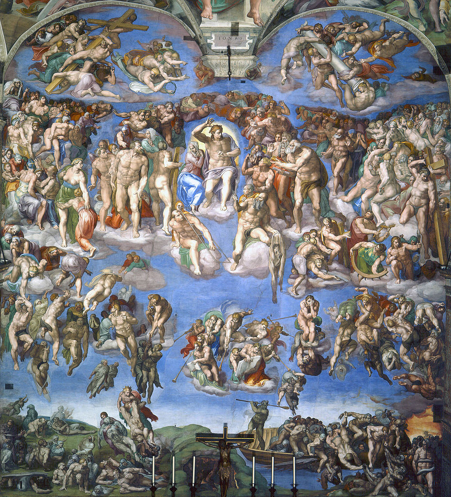
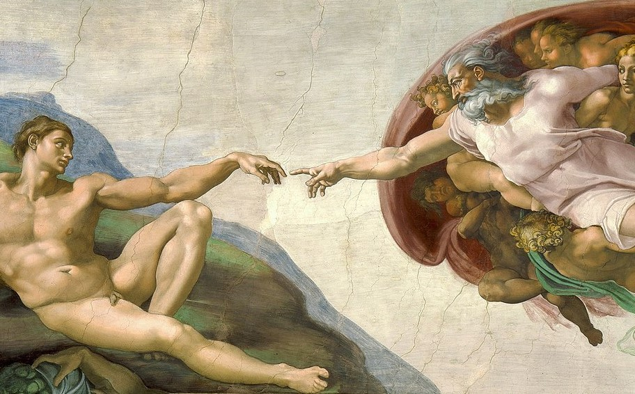
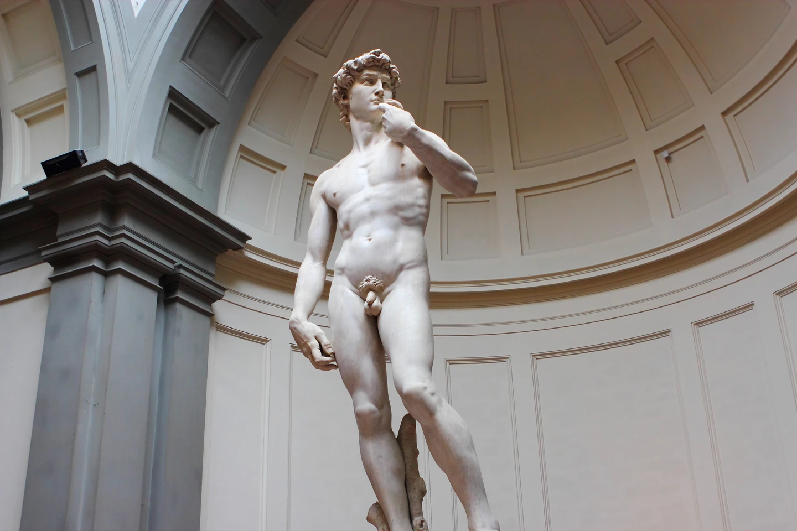
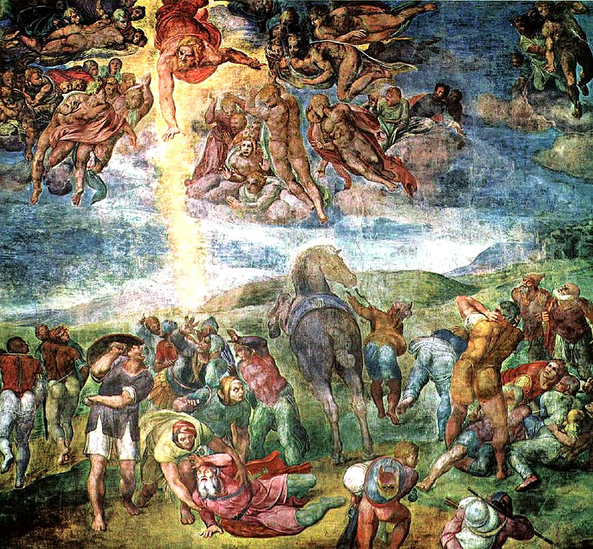
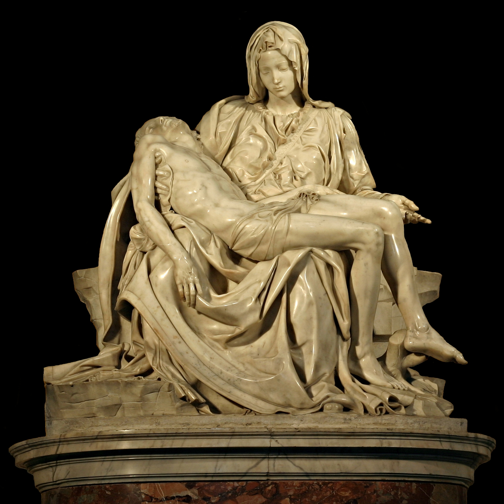
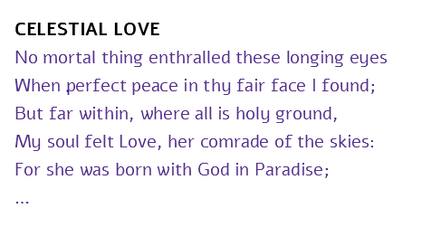

Sistine Chapel murals (1508-1512)
Michelangelo is one of the hallmarks of the Renaissance - the time that artists rediscovered the artstyle of Ancient Rome.
He is most famous for his decoration of the Sistine Chapel, where he portrayed dozens of biblical stories. His work there is still visible to this day (in the Vatican).

The Last Judgement (1508-1512)
The Last Judgement, that is part of the decorations on the Sistine Chapel. There are many tiny stories in this painting, but on the whole it portrays the scale from hell (below) to heaven (up high)

The Creation of Adam (1508-1512)
Another mural from the Sistine chappel. It portrays the divine creation of man, and is probably Michelangelo's most famous work.

David (1501-1504)
The biblical figure David, portrayed in an idealistic style (his body is 'perfect').
Bacchus (1496-97)
This sculpture was controversial at the time of creation: the cardinal Raffaele Riario commisioned the work, but later rejected it because the depiction of a pagan God was inappriopriate after all.

The Conversion of St. Paul (1542-45)
This scene depicts the bible verse Acts 9:3 "As he neared Damascus on his journey, suddenly a light from heaven flashed around him".
Sadly enough, this painting resides in a private chapel that's close to the Sistine chapel: people are only allowed in here on extremely rare occasion.

Pietà (1498-99)
This sculpture portrays the body of Christ resting in his mother Mary's arms (after his crucifixion).

Celestial Love (1887)
Part of a poem written by Michelangelo.